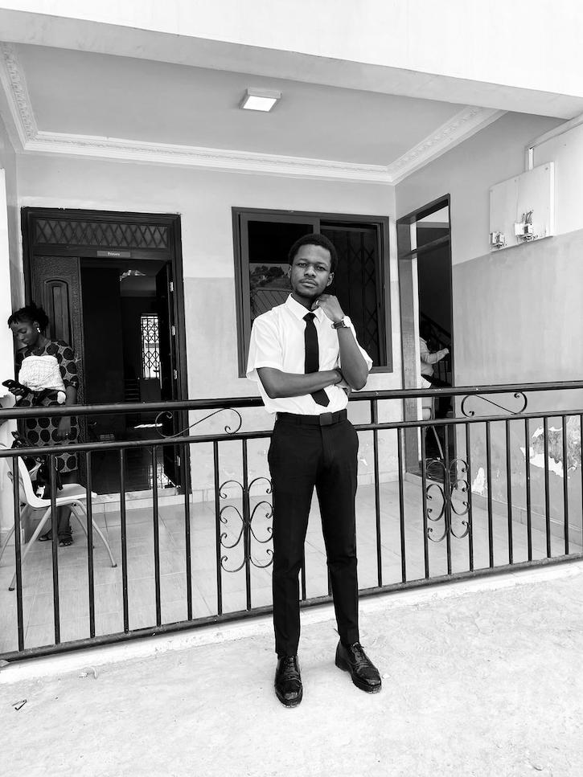

Home
About Me
Hello, my name is Awuah Dennis. I am a student of Software Development at the BYU PathwayConnect Worldwide, Idaho. I am currently in my first year or so of study and I am excited to learn more about web development through this course. In my free time, I enjoy hiking, reading, and playing video games.
I am from Accra, Ghana which is known for its vibrant culture and friendly people. One of my favorite foods is jollof rice, a popular West African dish made with rice, tomatoes, and spices. I also enjoy eating waakye and fried plantains. I have a strong interest in technology and enjoy solving problems through coding. My goal is to become a skilled web developer and contribute to meaningful projects. I also like collaborating with others and learning new programming languages. Besides tech, I love exploring new places, trying different foods, and spending time with family and friends.
Student Photo
Web Certificate Courses
All
CSE
WDD
WDD 130
WDD 131
WDD 231
The total credits for course listed above is 6